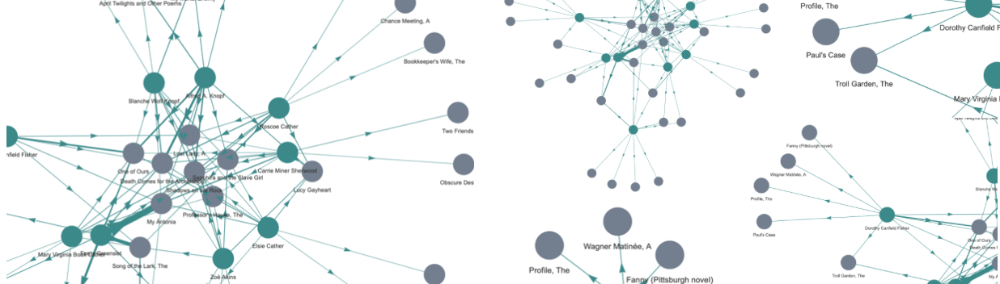

People

The series of network graphs included below are intended to help visualize the connections among people and works in Cather's correspondence. While neither definitive nor exhaustive, these graphs are intended to help us contextualize Cather withing her social and artistic networks. Each link will take you to an interact graph as well as a brief description of the graph and how it was made. The data underlying these graphs was made possible by the Willa Cather Archive's endeavors to digitize (using rich XML encoding) Cather's complete correspondence.
- Network Graph of which works Cather mentions to which recipients.
- Network Graph of which people Cather mentions to which recipients.
- Network Graph of Cather's own works that she mentions in tandem.
- Network Graph of Cather's own works that she mentions in tandem with works by other creators.